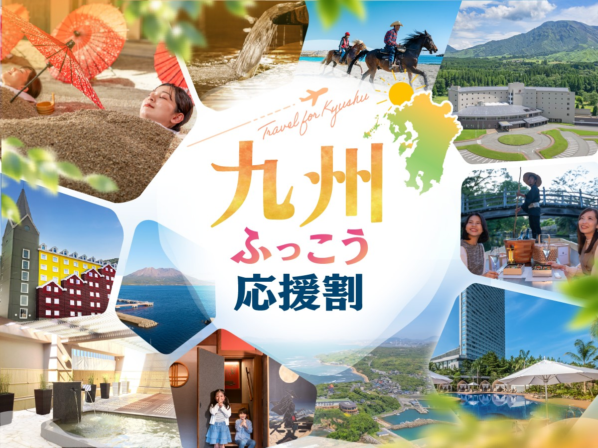
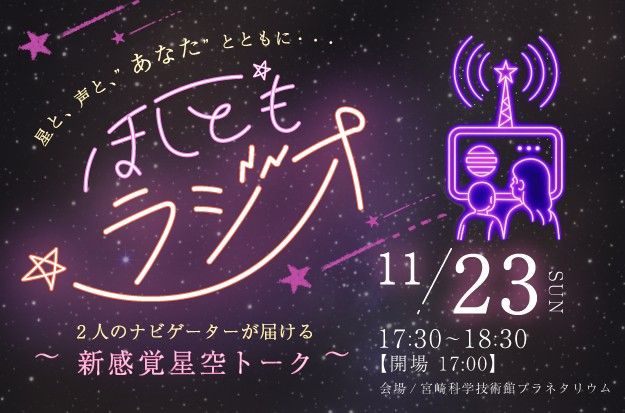
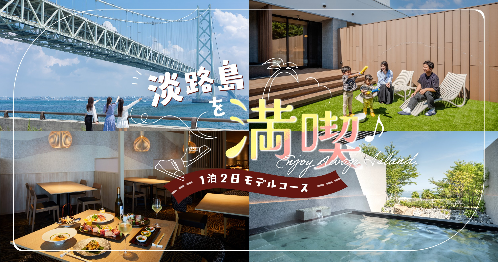
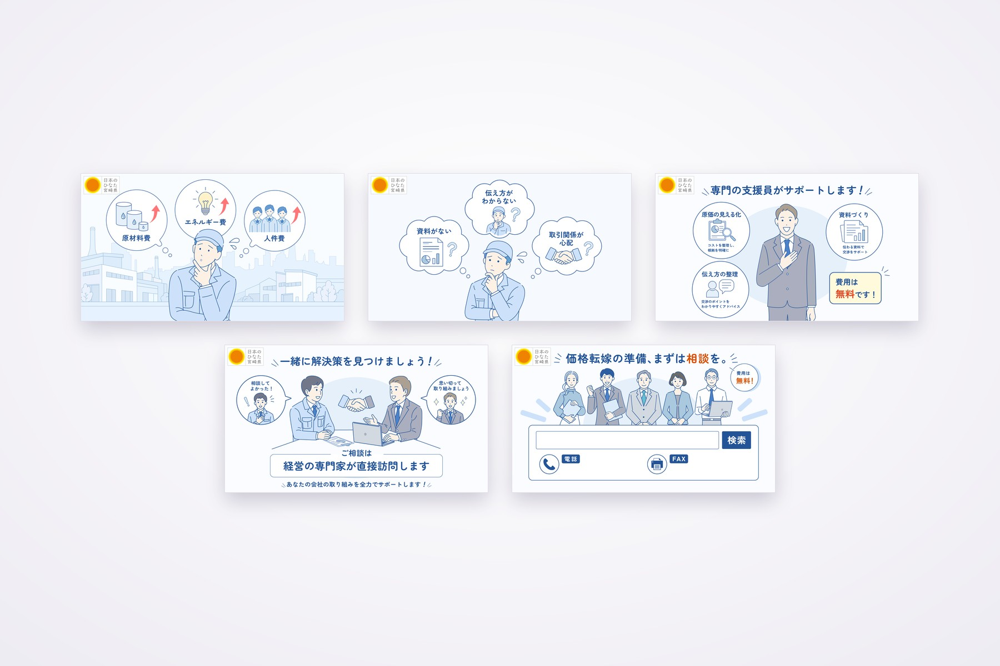
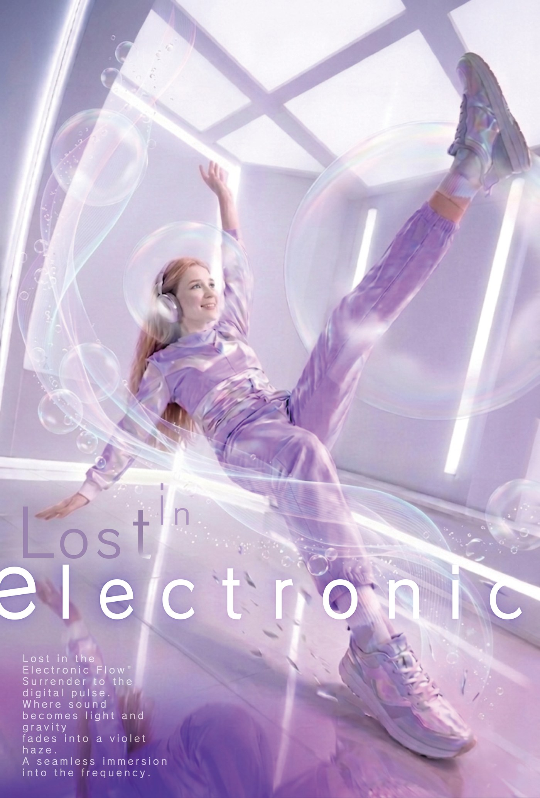
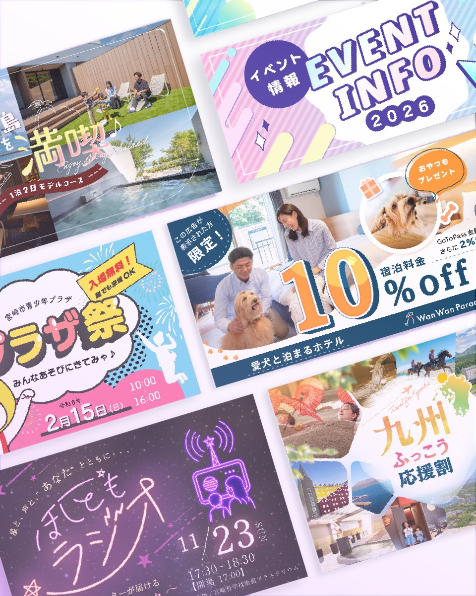
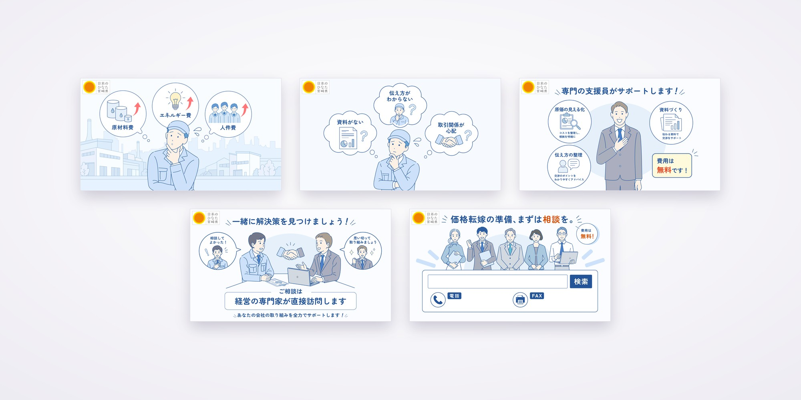

Banner 01
バナー「九州ふっこう応援割」(横長・縦長)
← Back(PROJECT No.02) 2026
07ITEMS /
No.02

バナー「九州ふっこう応援割」(横長・縦長)

バナー「ほしともラジオ」
バナー「EVENT INFO 2026」
バナー「Wan Wan Paradise」

バナー「淡路島を満喫」

動画用イラスト(全5枚)

デジタルデザインのポスター「Lost in electronic」

